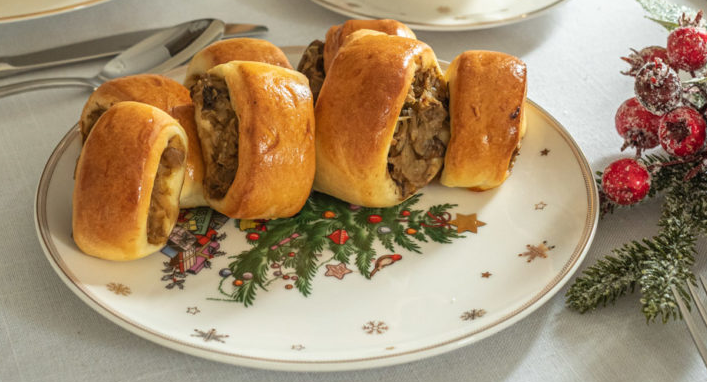

Porcje: około 40-50 pasztecików
– 450- 500 g mąki pszennej
– 250 ml ciepłego mleka
– 100 g rozpuszczonego masła
– 3 żółtka
– 8 g drożdży instant (lub 25 g świeżych drożdży)
– 1 łyżka cukru
– płaska łyżeczka soli
– dodatkowo 1 jajko i odrobina mleka do posmarowania pasztecików
Składniki farsz:– 30 g suszonych grzybów
– 300 g kapusty kiszonej
– ½ cebuli
– sól
– pieprz
1. Farsz: Grzyby namaczaj w gorącej wodzie co najmniej przez całą noc. Następnie gotuj je w wodzie około 10-15 minut, aż zmiękną.
2.W czasie gotowania grzybów przygotuj pozostałe składniki. Cebulę drobno posiekaj, kapustę także możesz posiekać drobniej. Na odrobinie oleju podsmaż cebulę – wystarczy, by się zeszkliła. Dodaj do cebuli pokrojone na mniejsze kawałki ugotowane grzyby oraz kapustę i zalej 1 szklanką wody. Ja wykorzystuję także wodę z gotowania grzybów, to dodatkowy smak mojej kapusty. Gotuj kapustę przez 20-30 minut, aż wszystko zmięknie i woda wyparuje. Dopraw solą i pieprzem. Na koniec możesz jeszcze posiekać nieco farsz aby łatwiej nadziewało się paszteciki.
3. Drożdże świeże: Do miski dodaj mleko, 2 łyżki mąki z podanej ilości i drożdże. Wymieszaj dokładnie aby drożdże rozpuściły się w mleku. Odstaw na 10-15 minut aby drożdże ruszyły.
4. Drożdże instant: Do miski dodaj wszystkie składniki podane na liście (do ciasta dodaje się tylko żółtka, białka możesz wykorzystać do zrobienia na przykład bezy od razu lub zamrozić je w woreczku strunowym i wykorzystać za jakiś czas). Wyrabiaj ciasto mikserem z końcówką typu hak do momentu kiedy ciasto będzie jednolite i elastyczne, już tylko trochę klejące ale odchodzące od ścianek misy podczas miksowania. Musisz wyczuć te moment, dlatego w przepisie podany jest przedział ilości mąki, dodaj 450 g i w razie czego dodaj więcej.
5.Ciasto odstaw do wyrośnięcia na 1 godzinę. Misę należy w tym czasie przykryć folią spożywczą.
6.Po wyrośnięciu wyjmuj 1/2 ciasta z misy. Z podanego kawałka rozwałkuj na blacie podsypanym mąką prostokąt, w którym jeden bok będzie miał 20-23 cm, a drugi będzie tak długi jak wyjdzie. Prostokąt za pomocą noża lub radełka przekroić wzdłuż, aby powstały dwa wąskie paski po 10-12 cm.
7.Na środku każdego z prostokątów ułóż porcję farszu. Do dwóch pasków zużyj mniej więcej połowę przygotowanej kapusty. Nakładając farsz zostaw wolny jeden bok około 2-3 cm, będzie służył do zaklejenia.
8.Każdy z pasów zroluj i zaklej rulon wolnym bokiem ciasta. Przekręć ciasto łączeniem do dołu i krój niewielkie paszteciki za pomocą noża. Każdy z pasztecików delikatnie przekładaj na blachę wyłożoną papierem do pieczenia.
9.Rozgrzej piekarnik do 180 st C. Paszteciki nasmaruj roztrzepanym jajkiem z dodatkiem odrobiny mleka i wstaw do piekarnika. Piecz przez 20-25 minut, aż paszteciki urosną i pięknie się zazłocą. Pieczenie pasztecików zrób na 2 lub nawet na 3 razy, z podanej ilości ciasta wyjdzie ich spora ilość.